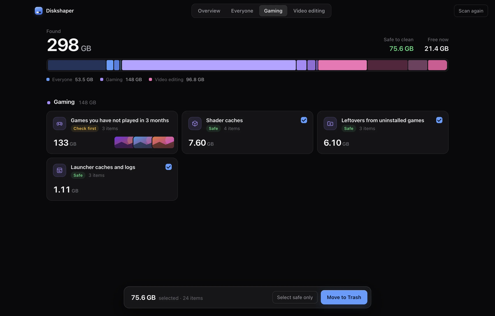
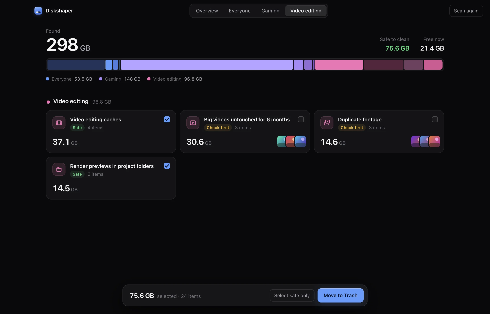
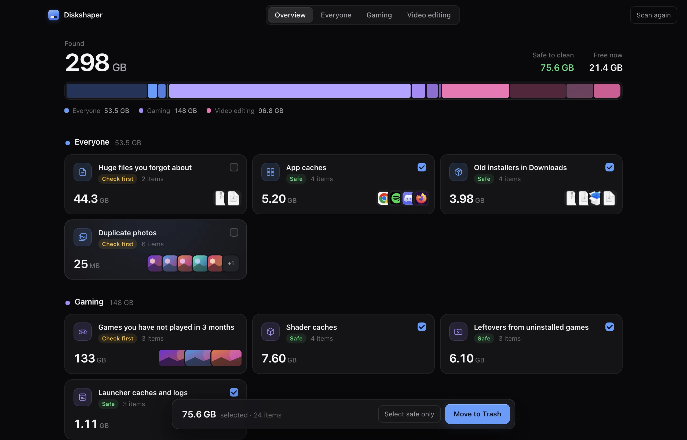

Everything Diskshaper finds
Three groups, about twenty kinds of clutter, each explained in plain words and marked Safe or Check first.
For gamers
Games are the biggest thing on most drives, and they leave a mess when they go.
- Shader cachesGraphics data your games and GPU driver rebuild on their own.
- Leftovers from uninstalled gamesFolders Steam and Epic left behind after an uninstall.
- Games you stopped playingWith the last time you played and a button to uninstall from the launcher.
- Empty CrossOver bottlesWindows setups on a Mac whose game is long gone.

For video editors
Editing apps quietly keep tens of gigabytes of cache, previews and proxies.
- Premiere, After Effects and Resolve cachesMedia cache, peak files, render cache and proxies.
- Render previews next to projectsThe preview folders Premiere and Final Cut save beside your project files.
- Duplicate footageThe same clip copied to three places. The oldest copy is kept.
- Old exportsBig renders untouched for six months, with a thumbnail of each.

For everyone
The everyday clutter: setup files you ran once, the same photo saved twice, and that 40 GB backup zip from your old laptop.
- Old installersDMG, PKG, EXE and MSI files in Downloads that already did their job.
- Duplicate photosExact copies, shown side by side with a thumbnail.
- Huge forgotten filesAnything over 1 GB that has not changed in three months.
- App cachesWith each app’s real icon, so you know what you are clearing.

How it works
- ScanDiskshaper reads your user folders, app caches and game libraries. It does not look in macOS or Windows system folders. On a typical computer this takes a few seconds.
- SortEverything it finds is put into a group, with the reason it is there and whether the app that made it will make it again.
- PickSafe items are ticked for you. Open any group to see each item, with game cover art, app icons and photo thumbnails, and change what is ticked.
- Move to the TrashNothing is deleted. You can put anything back until you empty the Trash or Recycle Bin.
Get your space back.
Free and open source. No account, no ads, nothing uploaded.